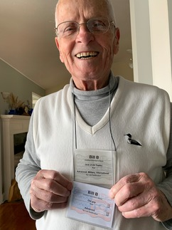

Bill Bartley
Our founder, our mentor, and forever “Mr. VITA.”

Bill Bartley gave more than twenty years to free tax preparation in Bloomington-Normal. As a retiree, he brought endless energy and enthusiasm to making free tax help available to more of our neighbors.
- 2002 · Began volunteering as a VITA tax preparer
- 2005 · Became a site manager
- 2011 · When our sponsoring organization reduced its scope, Bill founded the Bloomington Normal VITA Foundation and became its first president
- 2020 · He had promised to serve until age 80. He stepped down as president at 82
- 2023 · Continued volunteering and mentoring others until this year
Bill touched nearly every volunteer who came through VITA. Many of us joined because Bill asked us to. Even more of us learned the ropes with his guidance and support. He passed on his deep knowledge of tax law, his care for our clients, and his desire to serve. Those gifts will keep VITA strong for many years to come.
We miss his leadership, and we will always remember his work to make our community a better place.
You can read more about Bill’s life in his obituary.
Bill’s family generously named the Bloomington Normal VITA Foundation to receive memorial gifts in his honor. Give a memorial gift through PayPal.